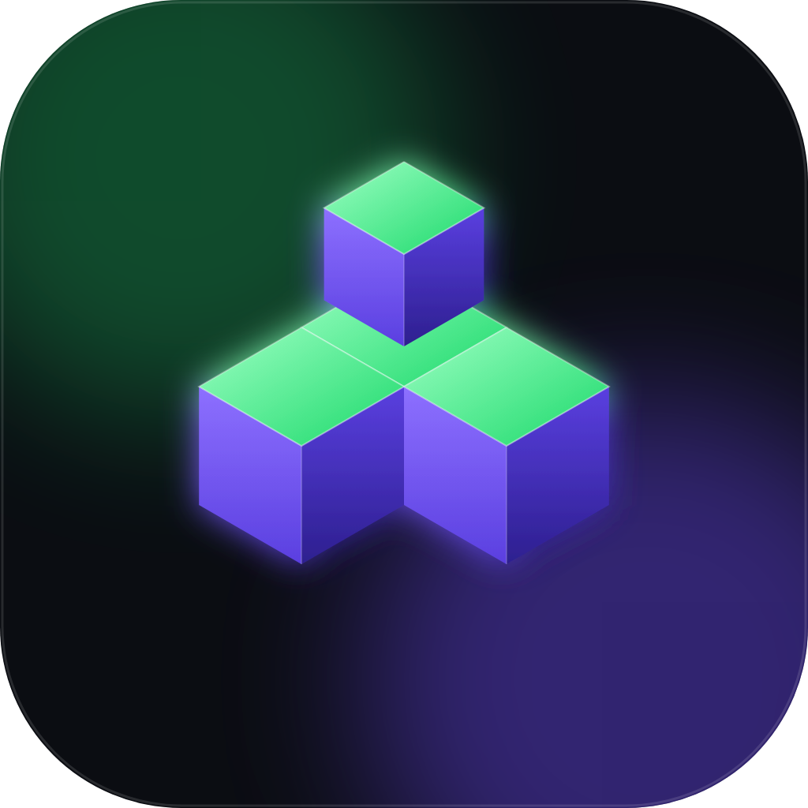

LOHYX HUBLe launcher Minecraft nouvelle génération : mods en un clic, Boost FPS, serveurs en direct… et il sait si ton PC est assez puissant.
Une interface moderne, simple, et rapide.
Vanilla, Fabric ou Forge, chacun avec ses mods, ses mondes et sa mémoire.
Recherche et installation en un clic depuis Modrinth, dépendances comprises.
Installe Sodium, Lithium et d'autres mods de performance d'un seul clic.
Le bouton Jouer change de couleur selon ce que ton PC peut encaisser.
Joueurs en ligne, ping et bouton « Rejoindre ».
Lohyx Hub te prévient quand une nouvelle version est prête.
Chaque profil affiche son verdict.
Windows 10 ou 11.
Clique sur « Télécharger Lohyx Hub » : le fichier LohyxHub.exe arrive dans tes Téléchargements. Rien d'autre à installer.
Si Windows affiche « a protégé votre ordinateur » : clique sur « Informations complémentaires », puis « Exécuter quand même ».
La fenêtre s'ouvre. Crée un profil, clique sur Jouer : Minecraft et Java s'installent tout seuls.
Tu préfères Python ? Télécharge la version .pyw (Python à installer sur python.org, en cochant « Add Python to PATH »).
Pour mettre à jour : rien à faire, Lohyx Hub te propose la nouvelle version dès qu'elle est disponible.
Les dernières versions.